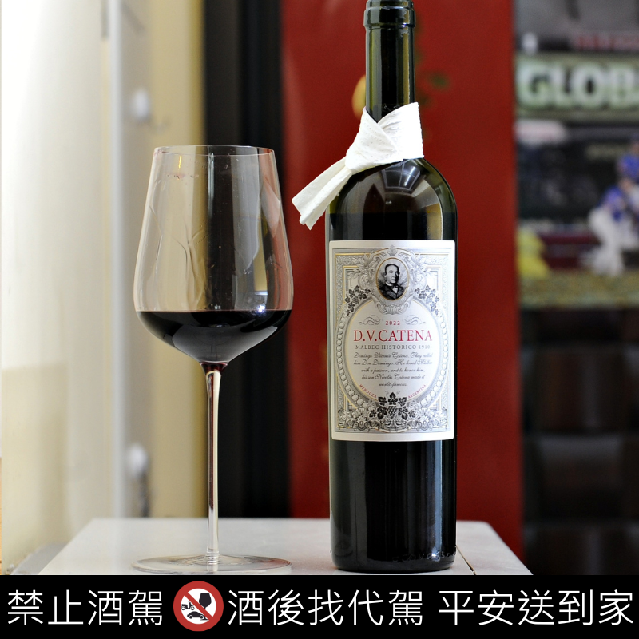
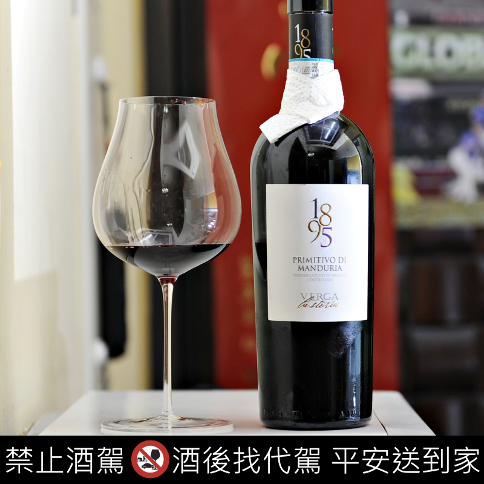
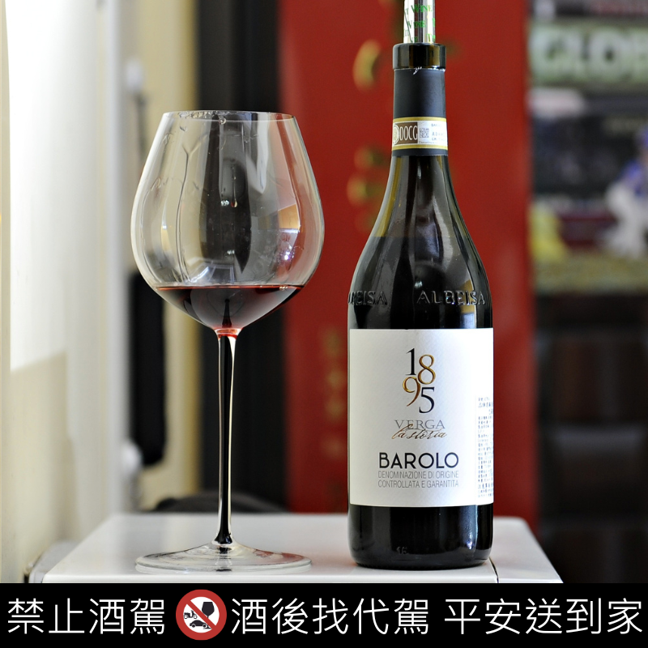
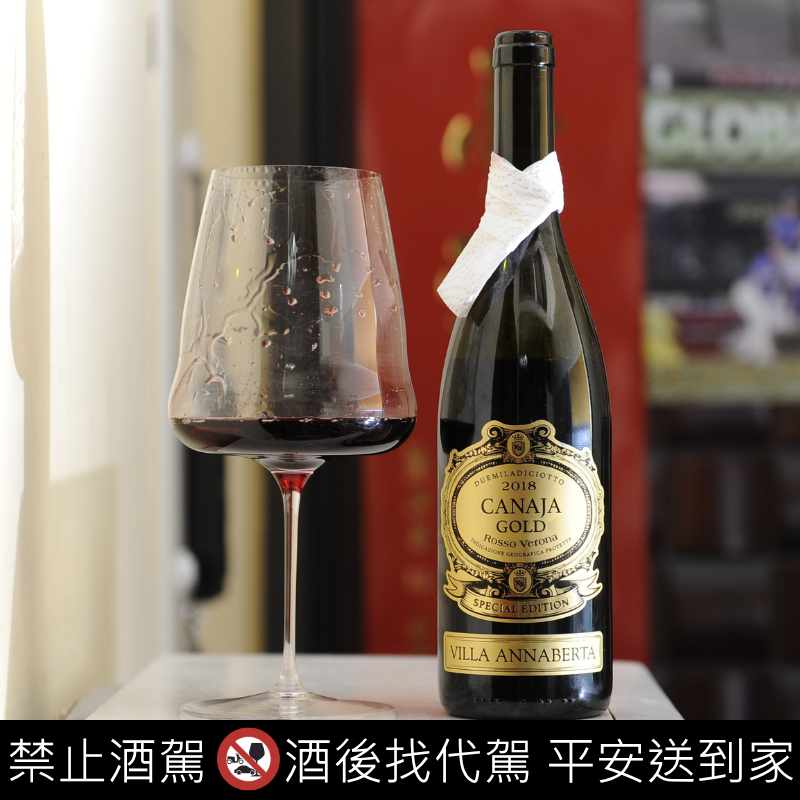

| 賣場 | 酒款 | 產區 | 國家 | 葡萄品種 | 酒精濃度 | 年份 | 酒莊(廠) | 甜度 | 酸度 | 飽滿度 | 星等 | 參考價 | 圖片 |
|---|---|---|---|---|---|---|---|---|---|---|---|---|---|
| 全聯 | 1895 Rosso | Toscana | 義大利 | Sangiovese 混合Cabernet and Merlot(100%) | 14% | 2017 | Verga La Storia | 酸度 | 飽滿度 | 適合搭配食物 | 25/5 | $499 |  |
| 全聯 | Bavardages Merlot | PAYS D'OC | 法國 | Merlot(100%) | 14% | 2018 | LGI | 酸度 | 飽滿度 | 適合搭配食物 | 25/5 | $389 |  |
| 全聯 | D.V Catena Historico Malbec | Mendoza | 阿根廷 | Malbec(100%) | 13.5% | 2017 | D.V Catena | 酸度 | 飽滿度 | 適合搭配食物 | 25/5 | $999 |  |
| 大全聯 | 1895 Primitivo di Manduria DOC | Manduria, Puglia | 義大利 | Primitivo(100%) | 14.5% | 2020 | Casa Vinicola Natale Verga | 酸度 | 飽滿度 | 適合搭配食物 | 25/5 | $649 |  |
| 大全聯 | 1895 Verga La Storia Barolo | Barolo DOCG，Piemonte | 義大利 | Nebbiolo(100%) | 14% | 2023 | Casa Vinicola Natale Verga | 酸度 | 飽滿度 | 適合搭配食物 | 25/5 | $1099 |  |
| 大全聯 | Canaja Gold Rosso Veronese | Veneto | 義大利 | 混釀(100%) | 14% | 2021 | Villa Annaberta | 酸度 | 飽滿度 | 適合搭配食物 | 25/5 | $399 |  |